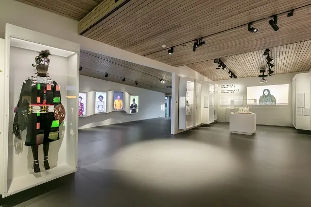
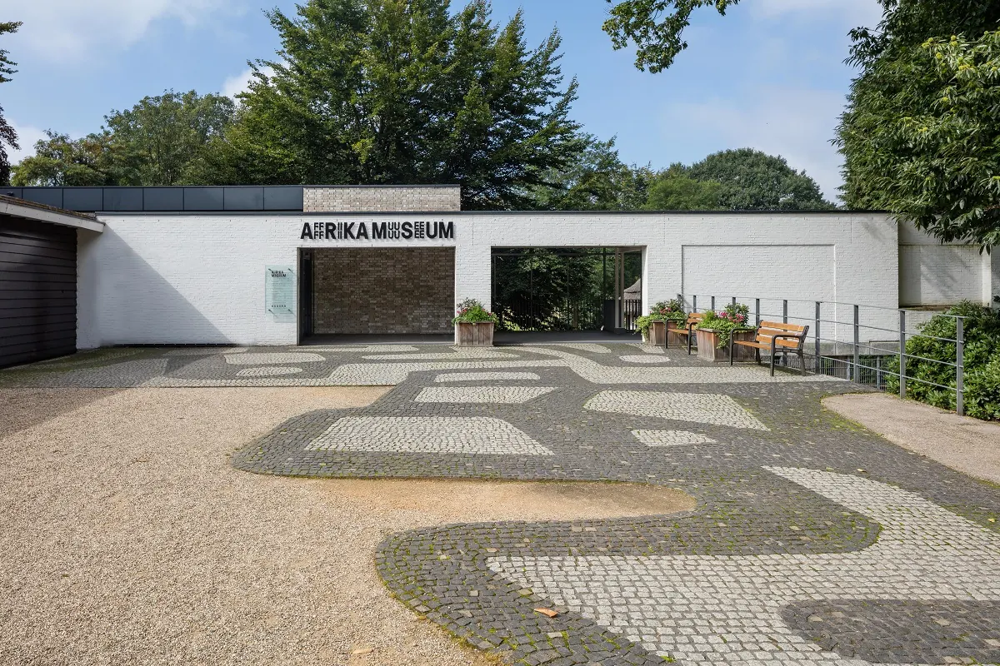

Hoe het Afrika museum je elke keer weer inspireert
Gepubliceerd op 17 oktober 2022, bijgewerkt op 21 oktober 2026
Onderdeel van de gids Musea in Nijmegen

Per 27 november 2023 heeft het Afrika Museum (Wereldmuseum) de deuren gesloten voor het publiek.
Het Afrika museum is een museum over de mens. Naast regelmatig wisselende exposities toont het museum traditionele Afrikaanse objecten, een grote collectie hedendaagse Afrikaanse kunst en heeft het voorwerpen die vertellen over de gebruiken en gewoonten van verschillende Afrikaanse volkeren. In het buitenmuseum maakt de bezoeker kennis met de traditionele architectuur van verschillende volkeren uit Ghana, Lesotho, Mali, Kameroen en Benin. In het Afrika Museum ontdek je dat we ondanks de verschillen, allemaal hetzelfde zijn.

De tentoonstellingen
Het Afrika museum heeft veel tentoonstellingen. Zo zijn er tentoonstellingen die er maar voor een bepaalde tijd zijn en zijn er vaste tentoonstellingen. In het museum zijn er drie vaste tentoonstellingen: Inspirerend Afrika, Het museumpark en Religie en samenleving.
Inspirerend Afrika
Met maar liefst 54 landen, 2000 officieel erkende talen en talloze culturele gebruiken bestaat er niet zoiets als één Afrika. In een vernieuwde, vaste opstelling zie je een hedendaags Afrika met een blik op het verleden en de toekomst. Je loopt langs de dynamiek, complexiteit en diversiteit van dit mooie continent.

Het museumpark
Wil jij alles weten over migratie, identiteit en architectuur? Dan moet je zeker langs het museumpark. Ontdek de interactieve spellen in de Afrikaanse huizen en leer de traditionele architectuur op het platteland in Ghana, Lesotho, Mali en Benin.
Religie en samenleving
Religie en Afrika staan onaflosbaar van elkaar verbonden. In een leven van onzekerheid is geloof en voor veel Afrikanen een houvast. Naast vele traditionele Afrikaanse religies maken ook christendom en islam al eeuwenlang deel uit van het religieuze leven in Afrika.
Tijdelijke tentoonstellingen
Naast de vaste tentoonstellingen zijn er in het Afrika museum ook tijdelijke tentoonstellingen die je kunt bezoeken. Je kunt alleen ontdekken of door middel van een tour. Ook zijn er verschillende workshops en kan je zelfs picknicken in het museum! In de zomer van 2022 komt het Keti Koti festival terug bij het Afrika museum. Genoeg om naar uit te kijken dus!
Koop hier je ticket voor het afrika museumWaar kun je nu terecht?
Het Afrika Museum is dicht, maar in en rond Nijmegen zijn nog genoeg musea te ontdekken. Denk aan Museum Het Valkhof in het centrum, Museumpark Oriëntalis in Heilig Landstichting en het Vrijheidsmuseum in Groesbeek. Alle tips vind je in onze gids Musea in Nijmegen.